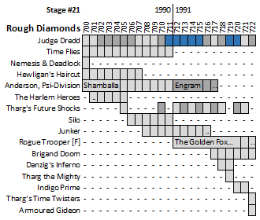

| Prog 701 by Jamie Hewlett | Prog 702 by Steve Dillon | Prog 703 by Arthur Ranson |
The backwash from an explosion of struggling "grown-up" comics threatens to drown whatever made the golden age so damned shiny in the first place. There are still diamonds here (in the form of Shamballa in Anderson, Nightmares in Dredd and the surreal wonder of Hewligan's Haircut) but we are also faced with a mixture of curios and misfires that bode ill for the future.
As sister comic Crisis struggles through it's slow-death monthly phase, Revolver finds itself cancelled after only seven issues. Meanwhile, the Judge Dredd Megazine continues its strong start.
Judge Dredd
We get a strong collection of post-Necropolis tales in Theatre Of Death, Nightmares, Wot I Did During Necroplis and Death Aid. Stand-out amongst these is Nightmares, which serves as a vital post-script to the epic in the same way as Tale of the Dead Man is a vital precursor. As Dredd undergoes reconstructive and rejuvenative treatment, Cadet Giant is sent out to provide aid to Yassa Povey, the young Cursed Earth boy to whom Dredd is terribly indebted. Death Aid marks a big change as John Wagner steps back to give Garth Ennis a pop in a follow-up story about The Hunter's Club.
More mixed-author Dredd in the next stage...
Time Flies *NEW THRILL*
Subpar 'Allo 'Allo depictions of World War II era Germans introduce this (predictably nouned) romp. It's Carry On Doctor Who, as broad, slapstick humour refuses to give way to anything approaching sublety. Also, there's a running set of (often homophobic) gags about how unmanly and untalented the twins from the popular beat combo Bros were.
Returns from the drawer in 1996 for a second series...
Nemesis and Deadlock: Warlocks & Wizards
Deadlock meets up with Nemesis, so that they can fight to the death in order to be reborn. Well, it serves as an excuse for a fight, anyway. (Also, the rest of the ABC Warriors are still hanging around with Deadlock.)
The pair return in the next stage...
Hewligan's Haircut *NEW THRILL*
A surreal and quite sweet adventure about an off-kilter young man (with an accidentally mystical haircut) and his more adept traveling companion Scarlet O'Gasmeter: both trying to solve the mystery of why the world's got it in for Hewligan.
Tis a one and done.
Anderson, Psi-Division
Shamballa (clearly labeled a pre-Necropolis story) has Anderson team up with Sov PsiKop Amisov from East-Meg 2 as they investigate violent global psychic phenomena (linked particularly strongly to real-world Tibetan Buddhist mythology) that seem to herald the end of the world. Engram sees Anderson violently hallucinating after an encounter with three witches in the Cursed Earth.
Engram continues after a thirty-nine prog gap...
Harlem Heroes *SOFT REBOOT*
The poor person's Leonard Smalls (an unnamed "deadly assassin" with bionic eyes) flags down a passing high-speed train and then, when he realizes it's going to Albuquerque rather than his prefered destination of Los Angeles, he murders his way into the engineers's compartment and forces them to de-couple all the other cars (which tumble to their doom) before demanding to be taken to LA. It doesn't take Sherlock Holmes (or even Shaggy from Scooby Doo) to realize that if LA is in the direction of current travel, one assumes he'll still have to pass through Albuquerque, because this is a train that travels (like trains do) on rails. If it's behind them, then he's going the wrong way (and has blocked the track with crumpled train cars). He couldn't just go to Albuquerque and get a connecting train?
Then there's an ED209 from Robocop, and more shooting and stuff so that the "Heroes" can clear their names by making sure that the public realize they're not those hired killers.
Despite multiple artists being drafted in to put this one out of its misery, it returns for a new series in prog 745...
Silo *NEW THRILL*
Perhaps inspired by a scene in WarGames (1983) featuring the two-man rule and definitely borrowing heavily from both The Shining and Die Hard, this is tonally a blend of 70s and 80s horror movies. Dark, bloody and somewhat confusing.
Tis a one and done.
Junker *NEW THRILL*
Probably more at home in the rough end of a stack of Starblazers, a knock-off Han Solo (more sexist shitheel than loveable scoundrel) and his non-human sidekick reluctantly help a distressed princess (with an outlandish hairstyle) by taking her for a spin in their hunk-a-junk spaceship.
Continues in the next stage...
Rogue Trooper [Fr1day]
The splash made by the rebooted Rogue Trooper with The War Machine (see previous stage) perhaps led to the decision to publish the 1991 Rogue Trooper annual, which features classic Rogue reprint alongside new Friday-Rogue tales.
Decoys is a cargo cult-inspired tale of desperate cunning to survive against the odds. The Undeath Project is a bit like a mash-up of Road Warrior and Countess Dracula, with added zombies. Bio-Death has Friday go up against a giant swamp scorpion with the help of some holdouts who don't know the war is over. (As original Rogue discovered, it's not much of a story if the war is over.) Circus Daze repeats the classic horror offer of "we'll have you for dinner", and gifts us the only Hicklenton::Rogue interface.
In the prog we get The Golden Fox Rebellion (set on an Earth still torn apart by war - so the war doesn't seem to be over), which is as barmy as all the other Fleisher stuff dominating the prog. For example, the security system on a stolen aircraft only kicks in once you've taken off, and then flies you into space. Whereas original RT had the clear cut sides of Nort and Souther, this war seems global and chaotic, with endless faction-fighting. This is probably more realistic a mirror of modern wars, but it's difficult to follow. Rogue joins up with the Golden Fox (Gaia from The War Machine) to battle the lazily-monikered Commander (a knock-off human Mekon crossed with Mandroid from The Eliminators), by doing things like jumping on and hot-wiring a cruise missile whilst it's in flight.
Continues in the next stage...
Brigand Doom *NEW THRILL*
It's D for Vendetta, as a motiveless, murderous and unbeatable drug-addicted zombie-thug in a Dick Turpin outfit has weird eyes in a bleak dystopian metropolis. In terms of window-dressing, it's 1984 meets Taxi Driver. High on aesthetic but low on explanation, it may also have been ahead of its time as it predates (and latterly is reminiscent of) Complicity (Banks, 1993), Dark City (1998) and The Mask (John Arcudi, 1991).
Returns in the 1991 Sci-Fi Special...
Danzig's Inferno
A densely weird surreal world in which ... I don't know. Ask John Smith. (Mentally ill part-cyborg trapped in a lab tries to save the world from demonic mad-men by turning them into barbie dolls. Or Sindies. But most of what happens isn't that.)
Tis a one and done.
Indigo Prime
The 1990 Winter Special has Fervent & Lobe: Holiday On Ice, which is sort of The Shining meets Skegness. Almaranda (from Fervent & Lobe: The Issigri Variations) returns for Almaranda in 'Solstice' (720-721), which is a frying-pan-to-fire tale of just desserts.
Tremble...Indigo Prime returns in prog 735...
Armoured Gideon: No, No, Nanette
A one-off that features the titular giant robot and a delusional man but fails to provide forward momentum to the over-arching plot. (I mean, the main character of the first series wasn't the robot. And still isn't. So where's Frank?)
Gideon next surfaces in the 1992 Sci-Fi Special...
Bradley and the Social Worker
In the 1990 Winter Special we have moved on from the previous set (Bradley's Thesaurus of Modern Music) of tales and Bradley ends up being sectioned, much to the relief of his exhausted parents. If you take Bradley's tales at face value, this might be seen as justice. But most of his complaints (please let me dress myself, please let me choose my own music) seem reasonable. Him dismembering kidnapped women is something else: but perhaps he's exaggerating to try to liven up the social worker's day (as he suggests at the beginning of the tale).
Bradley's Bedtime Stories start up in 1992's prog 795...
Bix Barton: The Disproportionate Man
This is in the 1990 Winter Special and features the ususal mugging to camera as a man causes things to be out of proportion, including (meta) the art in the strip. I suppose this is like Deadpool if he was an art student from Eton.
The Marmite continues to be spread in prog 723...